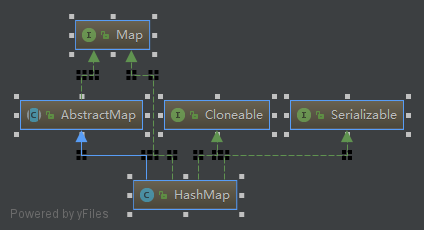

主要学习构造函数、取值、存值和遍历这几个方面
1、先看介绍

/**
//大体意思：实现了Map接口，且key和value都允许null,除了这一点和没有现成同步，其他基本和
HashTable一样；而且，它不保证元素的顺序。
* Hash table based implementation of the <tt>Map</tt> interface. This
* implementation provides all of the optional map operations, and permits
* <tt>null</tt> values and the <tt>null</tt> key. (The <tt>HashMap</tt>
* class is roughly equivalent to <tt>Hashtable</tt>, except that it is
* unsynchronized and permits nulls.) This class makes no guarantees as to
* the order of the map; in particular, it does not guarantee that the order
* will remain constant over time.
*HashMap提供常量时间内的存取操作，迭代器的效率和容量大小成正比，所以如果使用迭代器不要设置
过大的容量和负载因子（无效位置过多，迭代时浪费时间）
* <p>This implementation provides constant-time performance for the basic
* operations (<tt>get</tt> and <tt>put</tt>), assuming the hash function
* disperses the elements properly among the buckets. Iteration over
* collection views requires time proportional to the "capacity" of the
* <tt>HashMap</tt> instance (the number of buckets) plus its size (the number
* of key-value mappings). Thus, it's very important not to set the initial
* capacity too high (or the load factor too low) if iteration performance is
* important.
*数据数量到达负载因子时*容量时，容量会扩大为原来的两倍，数据会重新映射（这儿有点小坑，并不是完全重新映射
这个部分有优化，后续会看到）
* <p>An instance of <tt>HashMap</tt> has two parameters that affect its
* performance: <i>initial capacity</i> and <i>load factor</i>. The
* <i>capacity</i> is the number of buckets in the hash table, and the initial
* capacity is simply the capacity at the time the hash table is created. The
* <i>load factor</i> is a measure of how full the hash table is allowed to
* get before its capacity is automatically increased. When the number of
* entries in the hash table exceeds the product of the load factor and the
* current capacity, the hash table is <i>rehashed</i> (that is, internal data
* structures are rebuilt) so that the hash table has approximately twice the
* number of buckets.
*负载因子设为0.75是综合考虑时间和空间耗费的值，高了会提高空间利用率，低了会提高存取时间。
* <p>As a general rule, the default load factor (.75) offers a good
* tradeoff between time and space costs. Higher values decrease the
* space overhead but increase the lookup cost (reflected in most of
* the operations of the <tt>HashMap</tt> class, including
* <tt>get</tt> and <tt>put</tt>). The expected number of entries in
* the map and its load factor should be taken into account when
* setting its initial capacity, so as to minimize the number of
* rehash operations. If the initial capacity is greater than the
* maximum number of entries divided by the load factor, no rehash
* operations will ever occur.
*
* <p>If many mappings are to be stored in a <tt>HashMap</tt>
* instance, creating it with a sufficiently large capacity will allow
* the mappings to be stored more efficiently than letting it perform
* automatic rehashing as needed to grow the table. Note that using
* many keys with the same {@code hashCode()} is a sure way to slow
* down performance of any hash table. To ameliorate impact, when keys
* are {@link Comparable}, this class may use comparison order among
* keys to help break ties.
*
//非线性安全
* <p><strong>Note that this implementation is not synchronized.</strong>
* If multiple threads access a hash map concurrently, and at least one of
* the threads modifies the map structurally, it <i>must</i> be
* synchronized externally. (A structural modification is any operation
* that adds or deletes one or more mappings; merely changing the value
* associated with a key that an instance already contains is not a
* structural modification.) This is typically accomplished by
* synchronizing on some object that naturally encapsulates the map.
*
* If no such object exists, the map should be "wrapped" using the
* {@link Collections#synchronizedMap Collections.synchronizedMap}
* method. This is best done at creation time, to prevent accidental
* unsynchronized access to the map:<pre>
* Map m = Collections.synchronizedMap(new HashMap(...));</pre>
*
//使用迭代器期间不允许修改map,除了迭代器自身的remove方法
* <p>The iterators returned by all of this class's "collection view methods"
* are <i>fail-fast</i>: if the map is structurally modified at any time after
* the iterator is created, in any way except through the iterator's own
* <tt>remove</tt> method, the iterator will throw a
* {@link ConcurrentModificationException}. Thus, in the face of concurrent
* modification, the iterator fails quickly and cleanly, rather than risking
* arbitrary, non-deterministic behavior at an undetermined time in the
* future.
*
* <p>Note that the fail-fast behavior of an iterator cannot be guaranteed
* as it is, generally speaking, impossible to make any hard guarantees in the
* presence of unsynchronized concurrent modification. Fail-fast iterators
* throw <tt>ConcurrentModificationException</tt> on a best-effort basis.
* Therefore, it would be wrong to write a program that depended on this
* exception for its correctness: <i>the fail-fast behavior of iterators
* should be used only to detect bugs.</i>
*/
public class HashMap<K,V> extends AbstractMap<K,V>
implements Map<K,V>, Cloneable, Serializable {
/**
* The default initial capacity - MUST be a power of two.默认容量大小
*/
static final int DEFAULT_INITIAL_CAPACITY = 1 << 4; // aka 16
//默认负载因子
static final float DEFAULT_LOAD_FACTOR = 0.75f;
/**
* The bin count threshold for using a tree rather than list for a
* bin. Bins are converted to trees when adding an element to a
* bin with at least this many nodes. The value must be greater
* than 2 and should be at least 8 to mesh with assumptions in
* tree removal about conversion back to plain bins upon
* shrinkage.
*/
static final int TREEIFY_THRESHOLD = 8;
/**
* The bin count threshold for untreeifying a (split) bin during a
* resize operation. Should be less than TREEIFY_THRESHOLD, and at
* most 6 to mesh with shrinkage detection under removal.
*/
static final int UNTREEIFY_THRESHOLD = 6;
2、构造函数
/**
* Constructs an empty <tt>HashMap</tt> with the specified initial
* capacity and load factor.
*/
public HashMap(int initialCapacity, float loadFactor) {
if (initialCapacity < 0)
throw new IllegalArgumentException("Illegal initial capacity: " +
initialCapacity);
if (initialCapacity > MAXIMUM_CAPACITY)
initialCapacity = MAXIMUM_CAPACITY;
if (loadFactor <= 0 || Float.isNaN(loadFactor))
throw new IllegalArgumentException("Illegal load factor: " +
loadFactor);
this.loadFactor = loadFactor;
this.threshold = tableSizeFor(initialCapacity);
}
/**
* Constructs an empty <tt>HashMap</tt> with the specified initial
* capacity and the default load factor (0.75).
*/
public HashMap(int initialCapacity) {
this(initialCapacity, DEFAULT_LOAD_FACTOR);
}
/**
* Constructs an empty <tt>HashMap</tt> with the default initial capacity
* (16) and the default load factor (0.75).
*/
public HashMap() {
this.loadFactor = DEFAULT_LOAD_FACTOR; // all other fields defaulted
}
/**
* Constructs a new <tt>HashMap</tt> with the same mappings as the
* specified <tt>Map</tt>. The <tt>HashMap</tt> is created with
* default load factor (0.75) and an initial capacity sufficient to
* hold the mappings in the specified <tt>Map</tt>.
*/
public HashMap(Map<? extends K, ? extends V> m) {
this.loadFactor = DEFAULT_LOAD_FACTOR;
putMapEntries(m, false);
}
我们用的比较多的应该是第二个和第三个，指定初始容量大小的构造函数和无参构造函数。强烈建议优先使用第二个。先看下第二个
获取最近接2的次方的初始化大小
static final int tableSizeFor(int cap) {
int n = cap - 1;
n |= n >>> 1;//这个会使得原本位置上为1（只关注最高位的1）的位其后的位上也变成1,此时最高位1和次高位都是1
n |= n >>> 2;//再右移两位相或，会使得最高位1后的三四位也变成1，后同理
n |= n >>> 4;
n |= n >>> 8;
n |= n >>> 16;
return (n < 0) ? 1 : (n >= MAXIMUM_CAPACITY) ? MAXIMUM_CAPACITY : n + 1;
}
至于为什么开始时要先减去1，最后再加上1.，以9为例，如果不这么做，获取的值是8，小于9，是不可取的，当然可以直接在最后左移一位来解决，比如等于7的时候，算出来的值是8，但是当初始化的值恰好是2的次方的时候会造成浪费，比方说8，计算出的值是16 ，凭空浪费了一半的空间。
注意初始化大小的值是赋给threshold的
/**
* The next size value at which to resize (capacity * load factor).
*
* @serial
*/
// (The javadoc description is true upon serialization.
// Additionally, if the table array has not been allocated, this
// field holds the initial array capacity, or zero signifying
// DEFAULT_INITIAL_CAPACITY.)
int threshold;
注释上写的是 这个值是记录下次扩容时的阈值的(capacity * load factor)
众所周知，HashMap底层使用数组存储数据，可是上面构造函数中并未看到数组初始化相关的内容，这是为什么？数组的初始化，是在第一次往HashMap中放数据时才初始化，也就是懒加载。好处是使用时才申请空间，不适用不占用空间。
3、数据存储相关
/**
* The table, initialized on first use, and resized as
* necessary. When allocated, length is always a power of two.
* (We also tolerate length zero in some operations to allow
* bootstrapping mechanics that are currently not needed.)
*/
transient Node<K,V>[] table;
HashMap使用node数组来存储数据，注释上来就声明了hashMap的Node数组，第一次使用时才进行初始化
看一下Node结构
/**
* Basic hash bin node, used for most entries. (See below for
* TreeNode subclass, and in LinkedHashMap for its Entry subclass.)
*/
//Map.Entry是个接口 Map.Entry是个接口 Map.Entry是个接口
static class Node<K,V> implements Map.Entry<K,V> {
final int hash;
final K key;
V value;
Node<K,V> next;
Node(int hash, K key, V value, Node<K,V> next) {
this.hash = hash;
this.key = key;
this.value = value;
this.next = next;
}
public final K getKey() { return key; }
public final V getValue() { return value; }
public final String toString() { return key + "=" + value; }
public final int hashCode() {
return Objects.hashCode(key) ^ Objects.hashCode(value);
}
public final V setValue(V newValue) {
V oldValue = value;
value = newValue;
return oldValue;
}
public final boolean equals(Object o) {
if (o == this)
return true;
if (o instanceof Map.Entry) {
Map.Entry<?,?> e = (Map.Entry<?,?>)o;
if (Objects.equals(key, e.getKey()) &&
Objects.equals(value, e.getValue()))
return true;
}
return false;
}
}
首先，Node实现了Map的内部接口Entry接口。
四个成员变量，除了我们知道的key/value外，还存储了hash值，这个值是用来通过hash函数计算存储位置的，最后一个是Node型的next，看到这个玩意儿的第一反应就是链表，事实确实如此，当不同的数据通过hash码映射到同一位置时，就会以链表的形式挂在该位置已有的数据上。
再看注释，这只是个基本的结构，当某个桶内的数据过多，转化成红黑树后，存储的结点就是树节点。
瞅一眼树节点
static final class TreeNode<K,V> extends LinkedHashMap.Entry<K,V> {
TreeNode<K,V> parent; // red-black tree links
TreeNode<K,V> left;
TreeNode<K,V> right;
TreeNode<K,V> prev; // needed to unlink next upon deletion
boolean red;
它集成自LinkedHashMap.Entry，而这个Entry又集成自Node结点，所以TreeNode就是特殊的Node。记住这一点，后面有用到
static class Entry<K,V> extends HashMap.Node<K,V> {
Entry<K,V> before, after;
Entry(int hash, K key, V value, Node<K,V> next) {
super(hash, key, value, next);
}
}
4、获取数据
public V get(Object key) {
Node<K,V> e;
return (e = getNode(hash(key), key)) == null ? null : e.value;
}
先计算key的hash值
/**
* Computes key.hashCode() and spreads (XORs) higher bits of hash
* to lower. Because the table uses power-of-two masking, sets of
* hashes that vary only in bits above the current mask will
* always collide. (Among known examples are sets of Float keys
* holding consecutive whole numbers in small tables.) So we
* apply a transform that spreads the impact of higher bits
* downward. There is a tradeoff between speed, utility, and
* quality of bit-spreading. Because many common sets of hashes
* are already reasonably distributed (so don't benefit from
* spreading), and because we use trees to handle large sets of
* collisions in bins, we just XOR some shifted bits in the
* cheapest possible way to reduce systematic lossage, as well as
* to incorporate impact of the highest bits that would otherwise
* never be used in index calculations because of table bounds.
*/
static final int hash(Object key) {
int h;
return (key == null) ? 0 : (h = key.hashCode()) ^ (h >>> 16);
}
这个就是著名的扰动函数。HashMap进行hash映射时也就是根据hash码确定存储位置时，用的方法是(capacity-1)&hash,就是数组的有效长度位和hash值进行相与，这种方式计算速度快，但是有个缺点，容易发生碰撞，
假设capacity=16,
capacity-1=0000000000000000000000000001111,
hash值是随机的整数值，和上面的值相与，会发现，实际有用的只是最后几位，前面的位上的数字并未产生作用。上面的扰动函数将hash码的前16位和后16位进行相与，高16位的值会使得低16的值发生变化，变相的使得高16位值也发生了作用，从而减少了碰撞的几率。
final Node<K,V> getNode(int hash, Object key) {
Node<K,V>[] tab; Node<K,V> first, e; int n; K k;
if ((tab = table) != null && (n = tab.length) > 0 &&
(first = tab[(n - 1) & hash]) != null) {
//通中第一个节点的hash值和key的hash值相等，直接返回
if (first.hash == hash && // always check first node
((k = first.key) == key || (key != null && key.equals(k))))
return first;
if ((e = first.next) != null) {
//红黑树取节点
if (first instanceof TreeNode)
return ((TreeNode<K,V>)first).getTreeNode(hash, key);
//链表节点
do {
if (e.hash == hash &&
((k = e.key) == key || (key != null && key.equals(k))))
return e;
} while ((e = e.next) != null);
}
}
return null;
}
5、添加数据
public V put(K key, V value) {
return putVal(hash(key), key, value, false, true);
}
final V putVal(int hash, K key, V value, boolean onlyIfAbsent,
boolean evict) {
Node<K,V>[] tab; Node<K,V> p; int n, i;
//第一次存数据时，进行初始化操作
if ((tab = table) == null || (n = tab.length) == 0)
n = (tab = resize()).length;
//如果该位置没有值，新建一个Node放到该位置
if ((p = tab[i = (n - 1) & hash]) == null)
tab[i] = newNode(hash, key, value, null);
else {
Node<K,V> e; K k;
//p为桶的头结点
//如果桶的头结点的key和要存入的key相等，则直接覆盖
if (p.hash == hash &&
((k = p.key) == key || (key != null && key.equals(k))))
e = p;
//如果桶中存储的是树，则在该树上处理
else if (p instanceof TreeNode)
e = ((TreeNode<K,V>)p).putTreeVal(this, tab, hash, key, value);
else {
//遍历该桶位置的链表
for (int binCount = 0; ; ++binCount) {
//链表中不存在相同的key则新增一个结点，挂在链表的最后
if ((e = p.next) == null) {
p.next = newNode(hash, key, value, null);
//桶中结点数量大于树化阈值，则将链表转换为树
if (binCount >= TREEIFY_THRESHOLD - 1) // -1 for 1st
treeifyBin(tab, hash);
break;
}
//遇到相等的key则覆盖
if (e.hash == hash &&
((k = e.key) == key || (key != null && key.equals(k))))
break;
p = e;
}
}
//e是遍历中找到的已存在的老数据，不存在老数据（新增）则e为null
if (e != null) { // existing mapping for key
V oldValue = e.value;
if (!onlyIfAbsent || oldValue == null)
e.value = value;
afterNodeAccess(e);
return oldValue;//如果是新数据替换老数据，而不是新增，不会引发下面的modCount值的变化
}
}
++modCount;
//如果达到扩容阈值，则进行扩容
if (++size > threshold)
resize();
afterNodeInsertion(evict);
return null;
}
// Callbacks to allow LinkedHashMap post-actions预留给子类LinkedHashMap实现的
void afterNodeAccess(Node<K,V> p) { }
6、remove
public V remove(Object key) {
Node<K,V> e;
return (e = removeNode(hash(key), key, null, false, true)) == null ?
null : e.value;
}
看看实际干活的方法
final Node<K,V> removeNode(int hash, Object key, Object value,
boolean matchValue, boolean movable) {
Node<K,V>[] tab; Node<K,V> p; int n, index;
//判断key存在
if ((tab = table) != null && (n = tab.length) > 0 &&
(p = tab[index = (n - 1) & hash]) != null) {
Node<K,V> node = null, e; K k; V v;
//key值地址相等和值相等满足一个提交即可
if (p.hash == hash &&
((k = p.key) == key || (key != null && key.equals(k))))
node = p;
else if ((e = p.next) != null) {
//树种查找
if (p instanceof TreeNode)
node = ((TreeNode<K,V>)p).getTreeNode(hash, key);
else {
//链表查找
do {
if (e.hash == hash &&
((k = e.key) == key ||
(key != null && key.equals(k)))) {
node = e;
break;
}
p = e;
} while ((e = e.next) != null);
}
}
if (node != null && (!matchValue || (v = node.value) == value ||
(value != null && value.equals(v)))) {
//树中删除结点
if (node instanceof TreeNode)
((TreeNode<K,V>)node).removeTreeNode(this, tab, movable);
//如果是桶中链表头结点，则将次结点变为头结点
else if (node == p)
tab[index] = node.next;
else
//普通的链表删除结点
p.next = node.next;
++modCount;//迭代器防修改
--size;
// Callbacks to allow LinkedHashMap post-actions
afterNodeRemoval(node);
return node;
}
}
return null;
}
上面树中怎么查找结点和删除结点，先跳过。
7、resize()
初始化和扩容时调用
final Node<K,V>[] resize() {
Node<K,V>[] oldTab = table;
int oldCap = (oldTab == null) ? 0 : oldTab.length;
int oldThr = threshold;
int newCap, newThr = 0;
if (oldCap > 0) {
if (oldCap >= MAXIMUM_CAPACITY) {
threshold = Integer.MAX_VALUE;
return oldTab;
}//扩容，每次扩容为原来的两倍
else if ((newCap = oldCap << 1) < MAXIMUM_CAPACITY &&
oldCap >= DEFAULT_INITIAL_CAPACITY)
newThr = oldThr << 1; // double threshold
}
//初始化，新建HashMap对象时调用了带初始化大小的构造函数
else if (oldThr > 0) // initial capacity was placed in threshold
newCap = oldThr;
//初始化，新建HashMap对象时调用无参构造函数
else { // zero initial threshold signifies using defaults
newCap = DEFAULT_INITIAL_CAPACITY;
newThr = (int)(DEFAULT_LOAD_FACTOR * DEFAULT_INITIAL_CAPACITY);
}
if (newThr == 0) {
float ft = (float)newCap * loadFactor;
newThr = (newCap < MAXIMUM_CAPACITY && ft < (float)MAXIMUM_CAPACITY ?
(int)ft : Integer.MAX_VALUE);
}
threshold = newThr;
@SuppressWarnings({"rawtypes","unchecked"})
Node<K,V>[] newTab = (Node<K,V>[])new Node[newCap];//申请空间，初始化node数组
table = newTab;
if (oldTab != null) {
for (int j = 0; j < oldCap; ++j) {
Node<K,V> e;
//桶中有数据
if ((e = oldTab[j]) != null) {
oldTab[j] = null;
//如果桶中只有一个结点，则直接重新hash映射
if (e.next == null)
newTab[e.hash & (newCap - 1)] = e;
else if (e instanceof TreeNode)
((TreeNode<K,V>)e).split(this, newTab, j, oldCap);
else { // preserve order
//下面这段贼有意思，大体思路是，loHead是指向低位链表的指针，所谓低位就是重新映射后桶的位置还在原来位置的位置，比方说桶大小为16，一个Node 的hash值为33，（以取余映射为例）它会被映射到桶号为1的桶中；扩容为32后，重新映射，它仍被映射到桶号为1的桶中，位置没有发生变化，这种结点且称为低位结点，相反的，位置发生变化的就是高位结点，用hiHead链表存储。最后，低位的结点放在原来位置的桶中，高位结点重新放映射，放到新的桶中，注意，由于只是数组长度增长了一倍，所以高位链表中的所有结点仍然会被映射到同一个桶中，所以和低位链表节点一样，只需要计算链表头结点的位置，把头结点放进去就可以了。这样最终不管桶中有多少个结点，最终最多只需要映射两次就可以将一个桶中的元素全部迁移到新数组中，大大节省了时间。此处再次体现了，hashMap使用的hash函数的好处。
//问题来了，为什么下面标红的if提交可以判断是高位还是低位？对比正常的找桶的过程e.hash & (oldCap-1),oldCap和（oldCap-1）的区别，就是一个是只有最高位为1（2的n次方）,一个是所有都为1，如果hash值和oldCap相与值为0，则说明扩容两倍后，桶的位置仍会落在<length/2的位置，也就是原来的桶中，且位置不会发生变化。仍以上面的33为例，可验证这个过程。
Node<K,V> loHead = null, loTail = null;
Node<K,V> hiHead = null, hiTail = null;
Node<K,V> next;
do {
next = e.next;
if ((e.hash & oldCap) == 0) {
if (loTail == null)
loHead = e;
else
loTail.next = e;
loTail = e;
}
else {
if (hiTail == null)
hiHead = e;
else
hiTail.next = e;
hiTail = e;
}
} while ((e = next) != null);
if (loTail != null) {
loTail.next = null;
newTab[j] = loHead;
}
if (hiTail != null) {
hiTail.next = null;
newTab[j + oldCap] = hiHead;
}
}
}
}
}
return newTab;
}
桶中数据为树的情况走下面的分支
/**
* Splits nodes in a tree bin into lower and upper tree bins,
* or untreeifies if now too small. Called only from resize;
*/
final void split(HashMap<K,V> map, Node<K,V>[] tab, int index, int bit) {
TreeNode<K,V> b = this;
// Relink into lo and hi lists, preserving order
TreeNode<K,V> loHead = null, loTail = null;
TreeNode<K,V> hiHead = null, hiTail = null;
int lc = 0, hc = 0;
//先说这个for循环，主要目的和上面桶是链表时一样，将节点分别挂在高位链表和低位链表上。
//上面已经提到过，TreeNode继承自LinkedHashMap.Entry，所以它还是个链表结构，有前后指针，所以此处代码和上面桶中结点是链表时基本一致。
for (TreeNode<K,V> e = b, next; e != null; e = next) {
next = (TreeNode<K,V>)e.next;
e.next = null;
if ((e.hash & bit) == 0) {
if ((e.prev = loTail) == null)
loHead = e;
else
loTail.next = e;
loTail = e;
++lc;
}
else {
if ((e.prev = hiTail) == null)
hiHead = e;
else
hiTail.next = e;
hiTail = e;
++hc;
}
}
//下面两个if分别处理高位结点和低位结点
if (loHead != null) {
if (lc <= UNTREEIFY_THRESHOLD)
//链表节点数量小于树化阈值的时候，将树TreeNode转化为普通Node
tab[index] = loHead.untreeify(map);
else {
tab[index] = loHead;
if (hiHead != null) // (else is already treeified)
//虽然去恶补了下红黑树的知识，但是点开代码的匆匆扫了一眼之后，我觉得的红黑树的知识要细细雕琢一下之后再去看吧
loHead.treeify(tab);
}
}
if (hiHead != null) {
if (hc <= UNTREEIFY_THRESHOLD)
tab[index + bit] = hiHead.untreeify(map);
else {
tab[index + bit] = hiHead;
if (loHead != null)
hiHead.treeify(tab);
}
}
}
untreeify方法是TreeNode类提供的方法，
/**
* Returns a list of non-TreeNodes replacing those linked from this node.
*/
final Node<K,V> untreeify(HashMap<K,V> map) {
Node<K,V> hd = null, tl = null;
//此处的this指向的是调用该方法的TreeNode结点，也就是上一步中高位或者地位链表的头结点
for (Node<K,V> q = this; q != null; q = q.next) {
//结点转化
Node<K,V> p = map.replacementNode(q, null);
if (tl == null)
hd = p;
else
tl.next = p;
tl = p;
}
return hd;
}
Node<K,V> replacementNode(Node<K,V> p, Node<K,V> next) {
return new Node<>(p.hash, p.key, p.value, next);
}
8、遍历
我们常用的遍历方式不外乎以下几种：按key遍历、按value遍历、按entrySet遍历
a、按key遍历
地球人都知道HashMap实现了Map接口，Map接口中有个keySet()方法，看看看HashMap对此方法的实现
/**
* Returns a {@link Set} view of the keys contained in this map.
* The set is backed by the map, so changes to the map are
* reflected in the set, and vice-versa. If the map is modified
* while an iteration over the set is in progress (except through
* the iterator's own <tt>remove</tt> operation), the results of
* the iteration are undefined. The set supports element removal,
* which removes the corresponding mapping from the map, via the
* <tt>Iterator.remove</tt>, <tt>Set.remove</tt>,
* <tt>removeAll</tt>, <tt>retainAll</tt>, and <tt>clear</tt>
* operations. It does not support the <tt>add</tt> or <tt>addAll</tt>
* operations.
*
* @return a set view of the keys contained in this map
*/
public Set<K> keySet() {
Set<K> ks = keySet;//这个keySet是父类AbstractMap提供的成员变量，是个普通的Map，但是上面put数据的时候并没有看到往这个set中存数据，所以猜测又是懒加载
if (ks == null) {
ks = new KeySet();
keySet = ks;
}
return ks;
}
KeySet是HashMap的内部类
final class KeySet extends AbstractSet<K> {
public final int size() { return size; }
public final void clear() { HashMap.this.clear(); }
public final Iterator<K> iterator() { return new KeyIterator(); }
public final boolean contains(Object o) { return containsKey(o); }
public final boolean remove(Object key) {
return removeNode(hash(key), key, null, false, true) != null;
}
public final Spliterator<K> spliterator() {
return new KeySpliterator<>(HashMap.this, 0, -1, 0, 0);
}
public final void forEach(Consumer<? super K> action) {
Node<K,V>[] tab;
if (action == null)
throw new NullPointerException();
if (size > 0 && (tab = table) != null) {
int mc = modCount;
for (int i = 0; i < tab.length; ++i) {
for (Node<K,V> e = tab[i]; e != null; e = e.next)
action.accept(e.key);
}
if (modCount != mc)
throw new ConcurrentModificationException();
}
}
}
public abstract class AbstractSet<E> extends AbstractCollection<E> implements Set<E> {
KeySet并没有显示的提供构造函数，找父类的构造函数，空的，再父类，又空的。这什么情况？作为一名有经验的初级开发人员，这种问题难不倒我，去翻文档嘛，查了keySet方法说明，嗯，并没有说明怎么初始化的。
仔细看下这个类的方法：size()、clear()、contains()都是调用的hashMap的对应的方法。下面着重看一下迭代器，迭代器方法返回的是KeyIterator
final class KeyIterator extends HashIterator
implements Iterator<K> {
public final K next() { return nextNode().key; }
}
而KeyIterator继承自HashIterator
abstract class HashIterator {
Node<K,V> next; // next entry to return
Node<K,V> current; // current entry
int expectedModCount; // for fast-fail
int index; // current slot
HashIterator() {
expectedModCount = modCount;
Node<K,V>[] t = table;
current = next = null;
index = 0;
if (t != null && size > 0) { // advance to first entry
//下面的循环的目的是找到第一不为空的桶的头结点
do {} while (index < t.length && (next = t[index++]) == null);
}
}
public final boolean hasNext() {
return next != null;
}
final Node<K,V> nextNode() {
Node<K,V>[] t;
Node<K,V> e = next;
//有无修改检测
if (modCount != expectedModCount)
throw new ConcurrentModificationException();
if (e == null)
throw new NoSuchElementException();
//一个桶中的结点遍历完了之后，开始寻找下一个不为空的桶
if ((next = (current = e).next) == null && (t = table) != null) {
do {} while (index < t.length && (next = t[index++]) == null);
}
return e;
}
public final void remove() {
Node<K,V> p = current;
if (p == null)
throw new IllegalStateException();
if (modCount != expectedModCount)
throw new ConcurrentModificationException();
current = null;
K key = p.key;
//直接调用的hashMap的删除方法
removeNode(hash(key), key, null, false, false);
expectedModCount = modCount;
}
}
其中主要的nextNode()和remove()都是直接操作HashMap,验证了KeySet中并没有存储数据，否则的话直接遍历它本身，将方便的多。
注意，KeySet不能调用add方法，虽然它实现了set接口，如果调用它会抛出一个不支持的操作异常UnsupportedOperationException砸在你的脸上（其实是调用父类的方法）
b、按照value遍历
values()方法和keySet()方法如出一辙，看完上面的按key遍历之后再看这个，一目了然
public Collection<V> values() {
Collection<V> vs = values;
if (vs == null) {
vs = new Values();
values = vs;
}
return vs;
}
final class Values extends AbstractCollection<V> {
public final int size() { return size; }
public final void clear() { HashMap.this.clear(); }
public final Iterator<V> iterator() { return new ValueIterator(); }
public final boolean contains(Object o) { return containsValue(o); }
public final Spliterator<V> spliterator() {
return new ValueSpliterator<>(HashMap.this, 0, -1, 0, 0);
}
public final void forEach(Consumer<? super V> action) {
Node<K,V>[] tab;
if (action == null)
throw new NullPointerException();
if (size > 0 && (tab = table) != null) {
int mc = modCount;
for (int i = 0; i < tab.length; ++i) {
for (Node<K,V> e = tab[i]; e != null; e = e.next)
action.accept(e.value);
}
if (modCount != mc)
throw new ConcurrentModificationException();
}
}
}
再看它的迭代器ValueIterator
final class ValueIterator extends HashIterator
implements Iterator<V> {
public final V next() { return nextNode().value; }
}
同样是继承自HashIterator，它的next方法返回的是node的value
c、按EntrySet
public Set<Map.Entry<K,V>> entrySet() {
Set<Map.Entry<K,V>> es;
return (es = entrySet) == null ? (entrySet = new EntrySet()) : es;
}
看一下内部类EntrySet的主要方法
final class EntrySet extends AbstractSet<Map.Entry<K,V>> {
public final int size() { return size; }
public final void clear() { HashMap.this.clear(); }
public final Iterator<Map.Entry<K,V>> iterator() {
return new EntryIterator();
}
public final boolean contains(Object o) {
if (!(o instanceof Map.Entry))
return false;
Map.Entry<?,?> e = (Map.Entry<?,?>) o;
Object key = e.getKey();
Node<K,V> candidate = getNode(hash(key), key);
return candidate != null && candidate.equals(e);
}
public final boolean remove(Object o) {
if (o instanceof Map.Entry) {
Map.Entry<?,?> e = (Map.Entry<?,?>) o;
Object key = e.getKey();
Object value = e.getValue();
return removeNode(hash(key), key, value, true, true) != null;
}
return false;
}
size()、clear()、contains()和remove()本质上调用的还是HashMap方法。
迭代器返回的是EntryIterator对象
final class EntryIterator extends HashIterator
implements Iterator<Map.Entry<K,V>> {
public final Map.Entry<K,V> next() { return nextNode(); }
}
又和上面的KeySet/Value的迭代器一样，此时的next()返回的是结点
看到此处才知道，网上一搜一大片的所谓的四种遍历方式是多不靠谱。
再来对比一下三者遍历的效率吧，都已经看过实现的源码了，再去对比这个，感觉索然无味。三者都是通过HashIterator实现的，都是挨个桶挨个结点访问。所以如果单纯的遍历key,keySet和entrySet效率一致，单纯遍历value,values和entrySet效率一致，如果遍历时同时需要key和value信息，entryMap最高，因为keySet拿到key还要再做一遍查找操作。
都提到这个了，那顺便再看一下toString方法
public String toString() {
Iterator<Entry<K,V>> i = entrySet().iterator();
if (! i.hasNext())
return "{}";
StringBuilder sb = new StringBuilder();
sb.append('{');
for (;;) {
Entry<K,V> e = i.next();
K key = e.getKey();
V value = e.getValue();
sb.append(key == this ? "(this Map)" : key);
sb.append('=');
sb.append(value == this ? "(this Map)" : value);
if (! i.hasNext())
return sb.append('}').toString();
sb.append(',').append(' ');
}
}
果然用的entrySet进行遍历，HashMap没有重写toString方法，所以调用的时候实际上是调用的父类abstractMap的toString方法